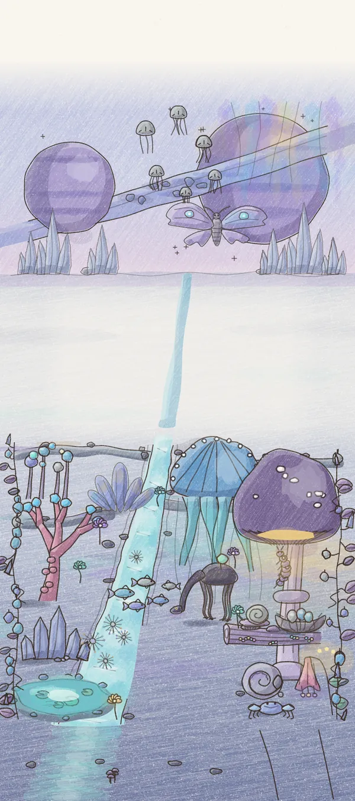
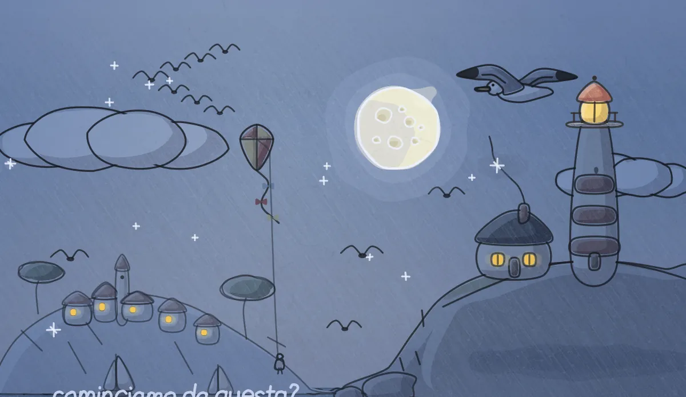

un objectif par jour.
pas une liste : un seul, celui que tu repousses depuis trop longtemps.
bientôt sur l'App Store
maintiens le cercle appuyé.
comment ça marche.
choisis un objectif. un seul, pour aujourd'hui.
c'est comme ça qu'on arrête de repousser : un petit pas à la fois.
quand tu l'as accompli, maintiens le cercle appuyé.
jusqu'à ce qu'il se ferme. c'est ton signe que c'est fait.
chaque objectif accompli peint un morceau du tableau.
à 30, le tableau est terminé. si tu sautes un jour, il t'attend.


les jours faits restent.
chaque objectif accompli est un morceau du tableau : 30 morceaux, pas forcément d'affilée.

qu'est-ce qu'on peint maintenant ?
quand un tableau est terminé, je l'accroche dans ton atelier et un autre commence.
- la côte en hiver

- le jardin

- le bois en automne

- le désert rouge

- le lumineux


dans ton atelier vit un compagnon.
il t'y attend chaque jour, pendant que tu peins. choisis qui.

1thing plus.
1thing est gratuit. avec 1thing plus :
- ton atelier, aménagé comme tu veux.
- plantes, rideaux, guirlandes lumineuses, ton compagnon : plus de 40 choses.
- les jours vides, je te trouve le bon objectif.
- je sais ce qui compte pour toi.
- le prochain tableau, c'est toi qui le choisis.
- n'importe quel tableau, quand tu veux.
- l'aube, le coucher du soleil et la nuit.
- le tableau change selon l'heure où tu accomplis ton objectif.
- icône et widgets comme tu veux.
- l'app devient la tienne.
essaie-le gratuitement pendant 14 jours.
un objectif par jour.
pour iPhone.
bientôt sur l'App Store